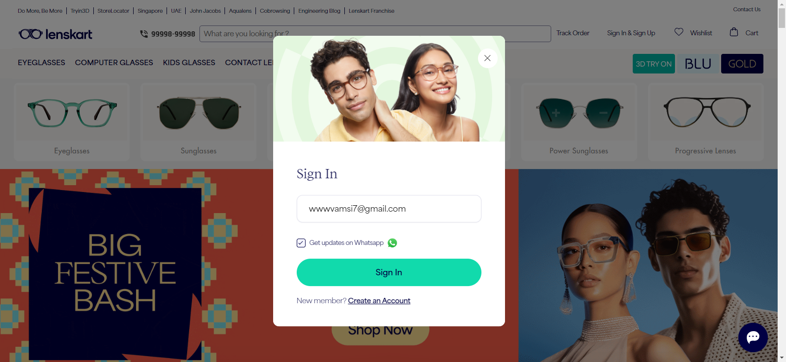
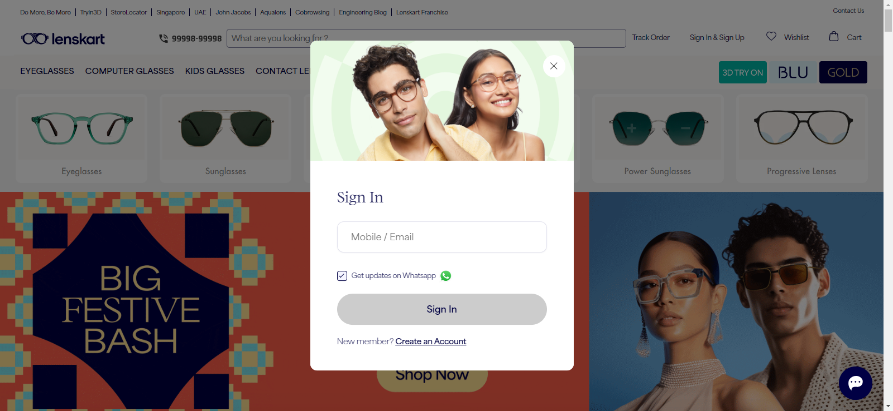
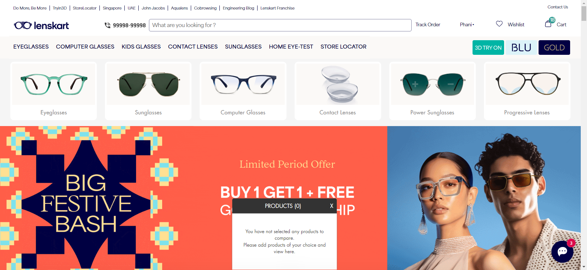

Started
Oct 17, 2023 04:20:27 PM
Ended
Oct 17, 2023 04:21:45 PM
Features Passed
0
Features Failed
3
Features
Scenarios
Steps
Timeline
System/Environment
| Name | Value |
|---|---|
| AppName | AutomationPractice |
| user | Vamsi |
| build | 1.1 |
| os | Windows 10 Pro |
-
Perform add to cart operation
4:20:28 PM / 00:00:20:817 Fail
Perform add to cart operation
10.17.2023 4:20:28 PM 10.17.2023 4:20:49 PM 00:00:20:817 · #test-id=1FailUser performs add to cart operation with validationsGiven user navigates to the login page of LenskartAnd user navigates to the Computer Glasses sectionStep skippedWhen user performs a random click to select any productStep skippedAnd user navigated to productStep skippedThen user validate the product by priceStep skippedWhen user clicks on buynow operationStep skippedThen user validate the product by nameStep skippedAnd user navigates to the Lenskart homepageStep skippedStepDefinitions.Hook.Hook.tearDown(io.cucumber.java.Scenario)User_performs_add_to_cart_operation_with_validations_screenshot.png -
Wishlist Functionality
4:20:28 PM / 00:00:35:209 Fail
Wishlist Functionality
10.17.2023 4:20:28 PM 10.17.2023 4:21:03 PM 00:00:35:209 · #test-id=2FailAdd an item to the wishlistGiven a logged-in user is on the product pageWhen user clicks on KidsGlassesStep skippedWhen the user adds an item to their wishlistStep skippedWhen user clicks on wishlistStep skippedThen user validate price of select productStep skippedStepDefinitions.Hook.Hook.tearDown(io.cucumber.java.Scenario)FailRemove an item from the wishlistGiven a logged-in user has items in their wishlist'When user click on wishlstStep skippedWhen the user removes added item from their wishlistStep skippedThen the item should be removed from the user wishlistStep skippedStepDefinitions.Hook.Hook.tearDown(io.cucumber.java.Scenario) -
Wishlist Functionality
4:20:49 PM / 00:00:56:347 Fail
Wishlist Functionality
10.17.2023 4:20:49 PM 10.17.2023 4:21:45 PM 00:00:56:347 · #test-id=17FailAdd an item to the wishlistGiven a logged-in user is on the product pageWhen user clicks on KidsGlassesStep skippedWhen the user adds an item to their wishlistStep skippedWhen user clicks on wishlistStep skippedThen user validate price of select productStep skippedStepDefinitions.Hook.Hook.tearDown(io.cucumber.java.Scenario)Add_an_item_to_the_wishlist_screenshot.pngFailRemove an item from the wishlistGiven a logged-in user has items in their wishlist'When user click on wishlstWhen the user removes added item from their wishlistStep skippedThen the item should be removed from the user wishlistStep skippedStepDefinitions.Hook.Hook.tearDown(io.cucumber.java.Scenario)Remove_an_item_from_the_wishlist_screenshot.png
-
org.openqa.selenium.NoSuchElementException
3 tests
org.openqa.selenium.NoSuchElementException
3 failedStatus Timestamp TestName Fail 16:20:35 PM Given user navigates to the login page of Lenskart Perform add to cart operation.User performs add to cart operation with validations.Given user navigates to the login page of LenskartFail 16:20:57 PM Given a logged-in user is on the product page Wishlist Functionality.Add an item to the wishlist.Given a logged-in user is on the product pageFail 16:21:39 PM When user click on wishlst Wishlist Functionality.Remove an item from the wishlist.When user click on wishlst -
org.openqa.selenium.NoSuchSessionException
4 tests
org.openqa.selenium.NoSuchSessionException
4 failedStatus Timestamp TestName Fail 16:20:35 PM Given a logged-in user is on the product page Wishlist Functionality.Add an item to the wishlist.Given a logged-in user is on the product pageFail 16:20:50 PM StepDefinitions.Hook.Hook.tearDown(io.cucumber.java.Scenario) Wishlist Functionality.Add an item to the wishlist.StepDefinitions.Hook.Hook.tearDown(io.cucumber.java.Scenario)Fail 16:20:50 PM Given a logged-in user has items in their wishlist' Wishlist Functionality.Remove an item from the wishlist.Given a logged-in user has items in their wishlist'Fail 16:21:03 PM StepDefinitions.Hook.Hook.tearDown(io.cucumber.java.Scenario) Wishlist Functionality.Remove an item from the wishlist.StepDefinitions.Hook.Hook.tearDown(io.cucumber.java.Scenario)